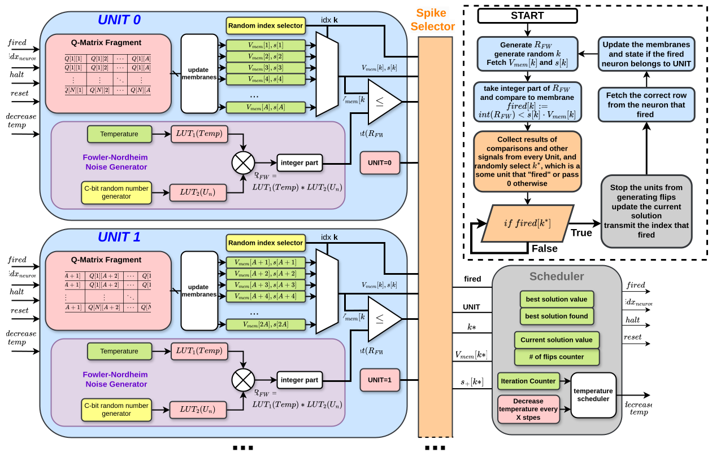

The figure is the unmodified architecture diagram from the paper. Highlights and values come from a Verilator simulation of the maintained RTL reduced to 12 variables (3 units × 4); Unit 2 corresponds to the “⋯” in the figure. Each accepted flip is stretched into five explanatory steps; the hardware overlaps them in a few clock cycles, and cycles between accepted flips include rejected proposals. Times assume the 100 MHz clock of the loadable overlays. Use ← / → to step and space to play. Checked trace.